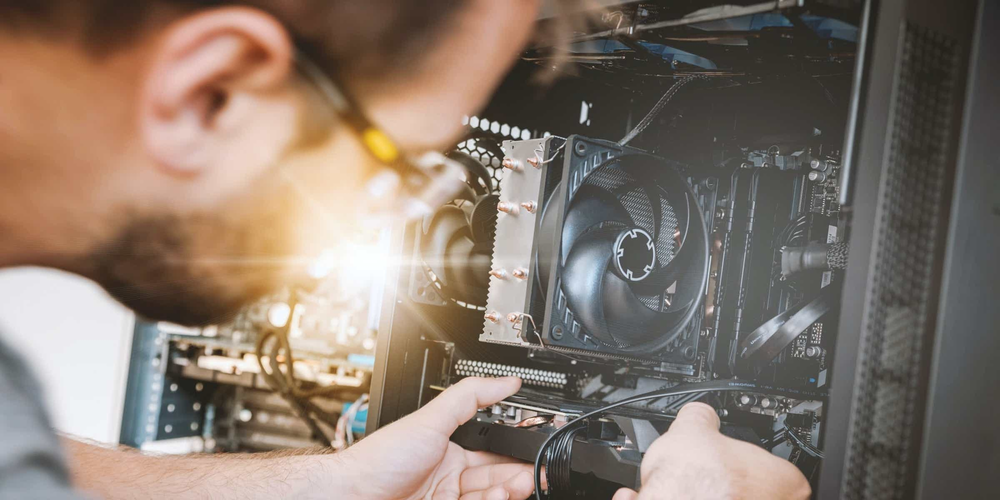

The Career
Computer Hardware Engineers is the career I chose because I find the career a big part of my interest. I like building and constructing pc parts and this career is baised around that interest. The career is mainly for people that are experience in hardware and should be taken seriously by the people that find this career interesting. The career is mosty based around manufactoring technolegy parts for devices like phones and computers. They install all of the chips and resistors responsible for all of the information that the device needs for function



The career is mainly for people that are experience in hardware and should be taken seriously by the people that find this career interesting. The career is mosty based around manufactoring technolegy parts for devices like phones and computers. They install all of the chips and resistors responsible for all of the information that the device needs for function.
This career will require skills in technolegy and wireing. This is because you will have to solder circut boards, wires, resistors, ribbon cables, chip pieces, and other types of small cabels.
The salary
The salary is the main attraction of most jobs so the salary of this job is what might get computer custructors to apply. This job has a bright outlook and is reccomended as a future job because of its high paying and rewarding salary. The salary has an average of $132,360 a year for someone who has more knowlage than some other people, a high salary of $208,200 in some potitions like assitant supervisor, and the lowest salary of $78,380 depending on your position.
Why would someone choose this job?
This job is mainy for people who are wanting to build pieces of technolegy. This career offers more skills in technolegy and constructing because you will be building and designing boards for devices. People who choose this career would be wanting to learn how to hot wire and solder different kinds of device circut boards and keep these skill. Computer Hardware Engineering would be a good career to take if you are willing to go above and behond in constructing and following to make sure that the boards you are engineering are perfect.
This job will also require a mostly non-toxic personality if you are working with other people. Having a good personality is good for you as well as other people. Nobody wants someone getting mad at them and being someone who nobody wants to work with, so have a friendly personality is something to keep in mind.